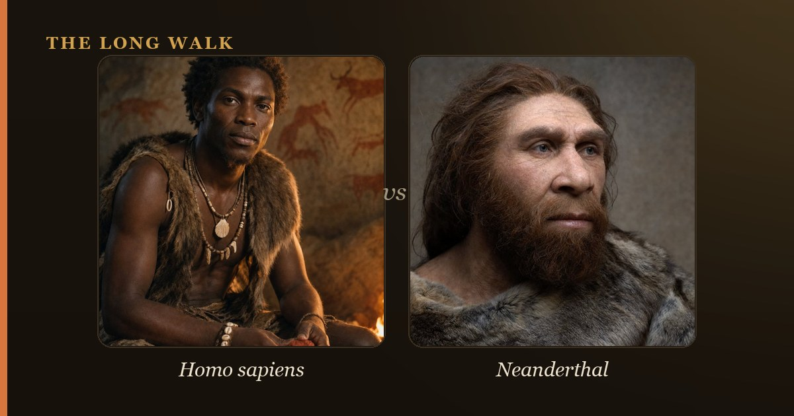

Homo sapiens vs Neanderthals is a comparison of sister lineages that split more than 500,000 years ago. Neanderthals were stockier, had long, low skulls and slightly larger brains on average; modern humans have rounder skulls, chins and lighter builds. Both made sophisticated tools. The two met and interbred in western Asia and Europe, mostly around 47,000 years ago, and most people outside Africa carry about 2% Neanderthal DNA. Neanderthals disappeared about 40,000 years ago.

In 2015, geneticists sequenced DNA from a jawbone found in Peștera cu Oase, a cave in Romania. The man had lived about 40,000 years ago and was a modern human. Between 6 and 9% of his genome was Neanderthal, and a Neanderthal ancestor sat only four to six generations back in his family tree. His great-great-grandparent, or close to it, was a Neanderthal.
That is the most direct answer to the Homo sapiens vs Neanderthals question: the line between them was real, but people crossed it. The rest of this article works through the questions people ask most, and separates what the evidence shows from what it only suggests.
Were Neanderthals smarter? Brain size vs brain shape
By volume, Neanderthal brains averaged roughly 1,410 cc, against about 1,350 cc for living humans. Size alone does not settle much, because Neanderthals also had larger bodies to run.
Shape tells a clearer story. Modern human braincases are globular: high and rounded. Neanderthal braincases are long and low. In 2010, Philipp Gunz and colleagues compared CT scans of children and found that the difference appears after birth. Modern infants go through a rounding phase in their first year that Neanderthal infants did not. In 2019, the same group found that people today who carry certain Neanderthal gene variants have slightly less rounded skulls, which links the shape difference to genes active in brain development.
Some researchers argue that Neanderthals devoted more of their brain to vision, because their eye sockets were larger, leaving relatively less for social processing. A 2022 study proposed that a modern human version of the gene TKTL1 boosts the production of neurons in the frontal lobe. Both ideas are contested, and neither has been tested on a Neanderthal brain, since none survives.
Homo sapiens vs Neanderthals: how would you tell them apart?
- Skull: Neanderthals had a large, double-arched brow ridge, a face that projects forward at the nose, a bun at the back of the skull and no chin. Modern humans have a vertical forehead, a small brow and a bony chin.
- Body: Neanderthals were shorter and broader, with barrel chests and short forearms and shins, a build that holds heat. Their bones were thicker and show heavy muscle use.
- Teeth: Neanderthal front teeth are large and heavily worn, often used as a third hand to grip hides or wood.
- Growth: Tooth studies suggest Neanderthal children grew up at roughly the same pace as ours, or slightly faster. That question is still debated.
Cro-Magnon vs Neanderthal: the first modern Europeans
“Cro-Magnon” is the old name for the early modern humans of Ice Age Europe, after a rock shelter at Les Eyzies in France, where workers found skeletons in 1868. They were fully modern Homo sapiens, tall and long-limbed, and they made Aurignacian and later Upper Palaeolithic tools, figurines and cave art.
They were not the first modern humans in Europe. At Bacho Kiro in Bulgaria, modern human remains date to about 45,000 years ago. At Grotte Mandrin in France, a child’s tooth and stone points suggest a brief modern human visit around 54,000 years ago, between Neanderthal occupations. The Mandrin dating and identification are contested by some researchers. Genomes from Ranis in Germany and Zlatý kůň in Czechia, around 45,000 years old, belong to a small early population that left no living descendants.
When and where did they interbreed?
Two studies published in 2024 used ancient genomes to date the mixing. Both point to a main period of interbreeding about 45,000 to 49,000 years ago, centred near 47,000 years ago and lasting several thousand years. Because almost all non-Africans share the same Neanderthal segments, most of that mixing happened in one population, probably in western Asia, before modern humans spread across Eurasia.
Other contacts happened too. Genomes show that Neanderthals received DNA from modern humans much earlier, perhaps more than 200,000 years ago, from a population that has not survived. And Africans carry small amounts of Neanderthal DNA, brought back by people who returned to Africa.
The inherited DNA still matters. Neanderthal variants influence immune responses, skin and hair, and some disease risks. One stretch on chromosome 3 has been linked to more severe COVID-19. For the detail, see how much Neanderthal DNA you have.
Genes that crossed in both directions
Gene flow did not run only from Neanderthals into us. In 2020, Martin Petr and colleagues showed that the Y chromosome of late Neanderthals, like their mitochondrial DNA, had been replaced by lineages from an earlier population related to Homo sapiens, which mixed with Neanderthal ancestors well over 100,000 years ago. Late Neanderthals carried some ancient sapiens ancestry.
The same year, Lu Chen and colleagues found more Neanderthal ancestry in present-day Africans than previously recognised. Much of it seems to come from people who had mixed with Neanderthals outside Africa and later moved back. Some Neanderthal variants still matter in living people. One stretch of chromosome 3, inherited from Neanderthals, was linked in 2020 to a higher risk of severe COVID-19. Other inherited variants affect immunity, skin and hair. The effects of most are small, and many have been gradually lost because they were slightly harmful. That kind of slow selection still goes on; see is human evolution still happening?.
Did Neanderthals think like us?
The old picture of Neanderthals as brutes has not survived the evidence. They controlled fire, made tar glue from birch bark, hunted large animals, cared for injured people and buried at least some of their dead. At Krapina in Croatia, eagle talons about 130,000 years old bear cut marks that suggest they were worn as ornaments. Red pigment markings in three Spanish caves were dated to more than 64,000 years ago in 2018, which would make them Neanderthal work. That dating has been challenged.
The difference shows up more in quantity and pace than in kind. Modern human sites after about 50,000 years ago contain far more ornaments, figurative art and specialised tools, and those traditions spread and changed quickly. Larger, better-connected populations may explain much of that, rather than a different kind of mind.
Why are we here and Neanderthals not?
A 2014 radiocarbon study of 40 sites found that Neanderthals disappeared between about 41,000 and 39,000 years ago, after overlapping with modern humans in parts of Europe for 2,600 to 5,400 years. Their genomes show small populations with low genetic diversity; the Altai Neanderthal’s parents were as closely related as half-siblings. Small, scattered groups are vulnerable to bad luck, disease and competition, and newcomers arriving in larger numbers would have added pressure. Some Neanderthal ancestry was absorbed into modern humans. Our article on why Neanderthals went extinct weighs the main explanations.
| At a glance | Homo sapiens | Neanderthals |
|---|---|---|
| Lived | ~300,000 years ago to today | ~430,000 to ~40,000 years ago |
| Brain | ~1,350 cc, globular | ~1,410 cc, long and low |
| Build | Taller, lighter | Shorter, broader, heavily muscled |
| Chin | Yes | No |
| DNA today | — | ~2% in people outside Africa |
See how Homo sapiens and the Neanderthals branch from a shared ancestor on the interactive family tree, then trace our route out of Africa on the DNA map.
Explore the family tree →Homo sapiens vs Neanderthals FAQ
Did Neanderthals have bigger brains than Homo sapiens?
On average, yes: about 1,410 cc against about 1,350 cc today. But they also had larger bodies, and brain shape differed. Modern human brains are rounder, a difference that develops in the first year after birth.
When did Homo sapiens and Neanderthals interbreed?
Ancient genomes point to a main period about 45,000 to 49,000 years ago, centred near 47,000 years ago, probably in western Asia. There were also earlier and later contacts.
How much Neanderthal DNA do people have?
Most people with ancestry outside Africa have about 2%. Africans carry smaller amounts, brought back by later migrations into Africa.
Is Cro-Magnon the same as Homo sapiens?
Yes. Cro-Magnon is an old name for early modern humans in Ice Age Europe, after a rock shelter in France where their skeletons were found in 1868.
Why did Neanderthals go extinct?
There is no single agreed cause. Small, inbred populations, competition with arriving modern humans, climate swings and absorption through interbreeding probably all played a part.
- Higham, T. et al. (2014). 'The timing and spatiotemporal patterning of Neanderthal disappearance.' Nature 512. nature.com
- Gunz, P. et al. (2019). 'Neandertal introgression sheds light on modern human endocranial globularity.' Current Biology 29. doi.org
- Fu, Q. et al. (2015). 'An early modern human from Romania with a recent Neanderthal ancestor.' Nature 524. nature.com
- Sümer, A. P. et al. (2024). 'Earliest modern human genomes constrain timing of Neanderthal admixture.' Nature. nature.com
- Slimak, L. et al. (2022). 'Modern human incursion into Neanderthal territories 54,000 years ago at Mandrin, France.' Science Advances 8. science.org
- Petr, M. et al. (2020). 'The evolutionary history of Neanderthal and Denisovan Y chromosomes.' Science 369. doi.org
- Chen, L. et al. (2020). 'Identifying and interpreting apparent Neanderthal ancestry in African individuals.' Cell 180. doi.org